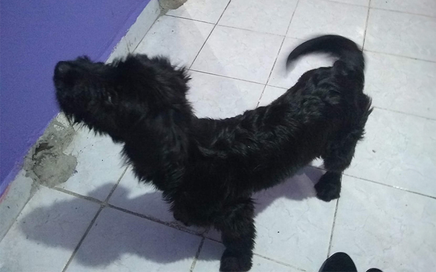
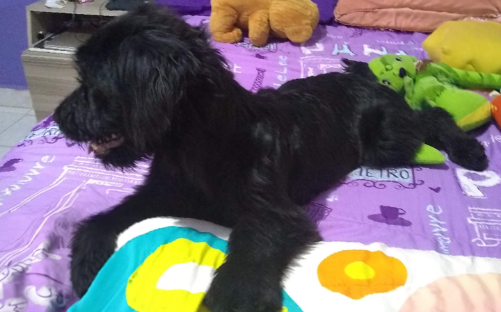

Nombre: Terry
Caracteristicas: Rayas cafes sobre pelaje negro
Sexo: Macho
Tamaño: Pequeño
Edad: Adulto
Ubicacion: Chimalhuacan

Nombre: Terry
Caracteristicas: Rayas cafes sobre pelaje negro
Sexo: Macho
Tamaño: Pequeño
Edad: Adulto
Ubicacion: Chimalhuacan

Descripcion:
Se encontra vagando por las calles buscando algo de comida y un lugar donde descansar, tiempo despues una niña lo encontro dormido en un pedazo de cartón y en ese momento le llevo un pequeño trapo para taparlo así como despues le llevo algo de comida, con el pasar de los días Terry esperaba a esa niña a una hora especifica afuera de su casa para volver a recibir comida, así fue hasta que unas semanas despues la familia de la niña decidio adoptar a Terry
